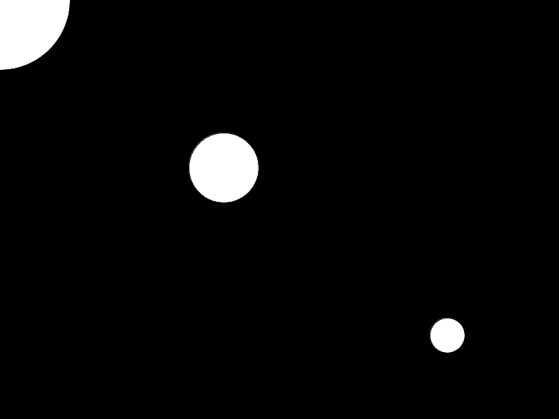

I denne modulen skal vi lære et programmeringsspråk som heter Processing. Det
ble laget for å gjøre programmering lett for designere og andre som ikke har
programmert før. Processing egner seg til å lage multimedieprogrammer, spill og
liknende. Mange liker Processing fordi det er raskt å lage programmer som
vanligvis krever mye arbeid.
Steg 1: Vindu
Nå skal vi begynne helt enkelt med å lage et vindu og fylle det med en
bakgrunnsfarge. Dette vil bli grunnlaget for nesten alle programmer
som du lager med Processing, så det er et fint sted å starte.
Lagre programmet som Ball ved å velge File --> Save i menyen.
Tips: Hvordan skrive krøllparenteser { }
Her er en oversikt over hvordan man skriver tegn som ofte brukes
i Processing og andre programmeringsspråk.
Tegn
Windows/Linux
Mac
;
Shift + ,
Shift + ,
"
Shift + 2
Shift + 2
'
' (til høyre for Æ)
' (til venstre for 1)
|
| (til venstre for 1)
Alt + 7
&
Shift + 6
Shift + 6
+
+ (til høyre for 0)
+ (til høyre for 0)
-
- (til høyre for .)
- (til høyre for .)
*
Shift + '
Shift + @ (til høyre for Æ)
/
Shift + 7
Shift + 7
[
Alt Gr + 8
Alt + 8
]
Alt Gr + 9
Alt + 9
{
Alt Gr + 7
Shift + Alt + 8
}
Alt Gr + 0
Shift + Alt + 9
Utforsking
Hva skjer hvis du:
Endrer 640 i size(640, 480);?
Endrer 480?
Hva om du endrer 0 i background(0);?
Hva skjer hvis tallet er høyere enn 255?
Hva skjer hvis tallet er negativt?
Før du går videre, fjern endringene du gjorde i utforskingen.
Forklaring av koden
Selv om du har utforsket size(640, 480) og background(0), lurer du kanskje på
hva resten av koden gjør? Her er en forklaring:
void setup() { lager en funksjon som heter setup. Når setup blir kalt
kjøres koden mellom krøllparentesene { }. Du lurer kanskje på hva en
funksjon er og hva det betyr å kalle den? En funksjon er en
navngitt del med kode. Den navngitte koden kan kjøres når man trenger det,
ved å kalle den slik som dette: setup();. setup er en spesiell
funksjon som alltid kjøres av Processing når du trykker på
.
Noen funksjoner gir tilbake en verdi som resultat når de er ferdige. Typen
verdi som returneres står foran navnet på funksjonen. Vi finner void
foran setup() som betyr at funksjonene ikke gir noe tilbake. Hvis man
eksempelvis ønsket å gi tilbake et heltall, ville man skrevet int navnetPaMinFunksjon() {. int står for integer, som er heltall på
engelsk, altså 0, 1, 2, 3, -1, -2, -3, osv.
size(640, 480); er et kall på funksjonen size som åpner et vindu med
bredde 640 piksler og høyde 480
piksler. Legg merke til at du sender verdier inn til size med å legge
verdiene mellom ( ). ; forteller at setningen er ferdig. Dette gjør det
mulig å ha flere setninger på samme linje (size(1,2); background(3);)
eller fordele en lang setning utover flere linjer.
} på linje tre betyr at funksjonen setup er ferdig.
void draw() { på linje 5 betyr at vi lager en funksjon som heter draw.
draw er spesiell, den blir kjørt om og om igjen så lenge programmet ditt
kjører.
background(0); setter bakgrunnsfargen i vinduet. Tallet 0 betyr at
bakgrunnen skal være svart. Hvit har verdien 255. Tallene mellom 0-255 gir
forskjellige gråtoner. Senere skal vi se hvordan vi tegner farger.
} på siste linje betyr at funksjonen draw er ferdig.
Steg 2: Sirkel
Siden denne oppgaven skal handle om en sprettende ball, er det på tide at vi
begynner å tegne. La oss tegne en sirkel midt i vinduet.
Klarer du knekke koden for hvordan ellipse fungerer?
Det første tallet bestemmer hvor langt til høyre i vinduet sirkelen skal tegnes opp.
Det andre tallet bestemmer hvor langt ned i vinduet den skal tegnes opp.
Det tredje tallet bestemmer hvor bred sirkelen skal være.
Det siste tallet bestemmer hvor høy sirkelen er.
Det siste hørtes kanskje rart ut? En sirkel er jo like bred som den er
høy! En ellipse som er like høy som den er bred, er en sirkel, men
ellipser kan også være bredere enn de er høye, eller høyere enn de er
brede. Derfor heter funksjonen ellipse og ikke circle.
I bildet ovenfor vises også området utenfor bilderammen og to piler X og
Y.
Det første tallet i ellipse angir posisjon langs X-aksen, vist med
X-pilen.
Det andre tallet i ellipse angir posisjon lans Y-aksen, vist med
Y-pilen.
Der pilene krysser hverandre har både X og Y verdien 0. Pilene strekker seg til
kanten av vinduet med verdiene 640 for X og 480 for Y. Dette ble bestemt av
size(640, 480).
Tips: Man kan tegne opp ting utenfor bildet med negative tall eller
tall som er større enn de som ble brukt i size.
Steg 3: Variabler
Til nå har vi brukt faste tall overalt. Dette fungerer ikke alltid bra. For
eksempel, hva skjer hvis vi endrer størrelsen på vinduet? Vil den første
sirkelen være i midten? Og hvordan kan vi få sirklene skal bevege på seg?
Dette løser vi ved hjelp av noe som heter variabler. En variabel er en verdi
som har blitt gitt et navn. Vi kan endre på verdien til variabelen, og det er
derfor det heter variabel: verdien kan variere.
Sjekkliste
La oss begynne med å endre størrelsen på vinduet i setup:
voidsetup() {
size(800, 600);
}
Legg merke til at to av sirkelene har "flyttet" på seg. De er ikke i midten
og høyre bunn av vinduet.

Vi skal nå ta i bruk to variabler som heter width og height, altså bredde
og høyde. Disse variablene får verdien til størrelsen på vinduet når size
kalles. Endre draw til å bruke width og height:
Her har vi brukt regnestykkene width / 2 og height / 2 for å
tegne opp den første sirkelen. Skråstreken / betyr delt på,
altså gir width / 2 halvparten av bredden. Hva gir height / 2?
Tips: Vi kunne også brukt width * 0.5 for å oppnå det samme, bredden
ganget med en halv. Noen ganger er det enklere med deling og andre ganger
ganging.
Lagre og kjør programmet, om du ikke har gjort det allerede.
La oss lage våre egne variabler, slik at vi kan få formene til å bevege
på seg:
float x;
float y;
voidsetup() {
size(800, 600);
x = width / 2;
y = height / 2;
}
float x; og float y; lager to variabler med navn x og y. Typen av
variablene er float, altså desimal eller flyttall. Inne i setup gir vi
variablene verdier, som er de samme regnestykkene som vi brukte tidligere.
Det er ikke nok å bare ha variabler, vi må bruke dem også. Endre draw til å
bruke x og y:
voiddraw() {
x = x + 1;
background(0);
ellipse(x, y, 100, 100);
ellipse(0, 0, 200, 200);
ellipse(width, height, 50, 50);
}
Den første sirkelen bruker nå x og y som posisjon. I tillegg la vi til
linjen x = x + 1; som sier at x skal øke med 1 for hver gang draw
kjøres. Hva vil skje med den ene sirkelen når programmes kjøres?
Lagre og kjør programmet, om du ikke har gjort det allerede.
Tips: Lagre som
Hvis du ikke vil miste de forskjellige stegene i denne oppgaven kan du bruke
Save as (Lagre som) istedenfor Save (Lagre). Du finner dette under
File -> Save as ved å trykke Ctrl + Shift + S. Lagre programmet med et
annet navn slik at du beholder de forskjellige variantene.
Utforsking
Kan du endre x og y inni draw slik at sirkelen beveger seg:
Mot venstre istedenfor høyre?
Opp istedenfor sidelengs?
Ned istedenfor for opp?
På skrå?
Steg 4: Sprette i veggen
Det er kjedelig når sirkelen forsvinner ut av vinduet hele tiden. Vi skal nå få
sirkelen til å snu når den treffer kanten av vinduet, slik en ball spretter
tilbake hvis den kastes i en vegg.
Sjekkliste
Vi trenger et par nye variabler for å styre retningen til
sirkelen. Legg til variablene xFart og yFart før setup:
float xFart = 1.5;
float yFart = 2;
Variablene har type float, altså flyttall eller desimaltall. Eksempelvis
1.1, 3.14, -2.01, osv. Variablene skal styre farten og retningen til
sirkelen. I Processing, og i de fleste programmeringsspråk, bruker vi
punktum istedenfor komma på desimaltall. Dette er fordi punktum er det som
brukes i engelsk.
Notis: La du merke til at variablene ble gitt verdier med en gang,
mens vi tidligere ga dem verdier inni setup? Grunnen til dette er at width
og height kan ikke brukes før size er kjørt, så vi kunne ikke gi x
og y verdier med en gang.
Legg til koden under i draw for å få ballen til å snu. Merk at vi endrer
setningen hvor vi øker x og fjerner to av sirklene.
voiddraw() {
x = x + xFart;
y = y + yFart;
if (x < 50) {
xFart = -xFart;
}
if (x > width - 50) {
xFart = -xFart;
}
if (y < 50) {
yFart = -yFart;
}
if (y > height - 50) {
yFart = -yFart;
}
background(0);
ellipse(x, y, 100, 100);
}
Lagre og kjør programmet.
Forklaring
I draw ser vi en del nytt som du ikke har sett før.
if (x < 50), hvis x er under 50, lar oss kjøre xFart = -xFart; kun
dersom x er under 50. Hva betyr de andre if-setningene?
xFart = -xFart; endrer fortegnet på farten. Dersom farten er positiv (+),
vil den endres til å bli negativ (+ - = -). Dersom farten er negativ får vi to
minus, som er positiv (- - = +).
Utfordringer
Kan du kombinere to og to av if-setningene ved å bruke ||? || betyr
eller. Her er et eksempel: if (x < 1 || x > 10), hvis x er under 1 eller
x er over 10.
Kan du få ballen til å sprette sideleng som dette?
Kan du få ballen til å endre form samtidig?
Kan du få ballen til å endre fart avhengig av posisjonen?
Forbedre denne siden
Funnet en feil? Kunne noe vært bedre? Hvis ja, vennligst gi oss tilbakemelding ved å lage en sak på Github eller fiks feilen selv om du kan. Vi er takknemlige for enhver tilbakemelding!


 .
.